Doccano工具安装 + 使用
完成时间：2023-12-15
一、安装Doccano
1. 下载Anaconda，点击Next至安装完成（最好不要安装到C盘）
2. 打开Anaconda Prompt，如果前面有base字样就是安装成功了
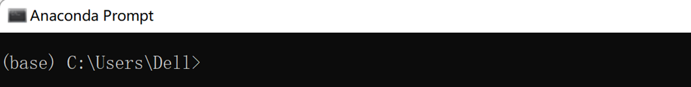
3. 在命令行中创建一个新的环境，输入： conda create -n XXX python=XX （注意这里XXX表示环境名称，XX表示python的版本号，比如我要创建一个环境名为doccano且python版本为3.8的新环境： conda create -n doccano python=3.8 ）
4. 创建好以后激活新环境： conda activate XXX （这里XXX仍然是你的环境名，要和创建时一致）
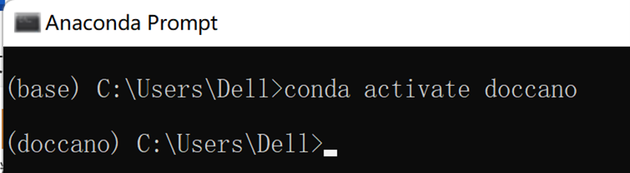
5. 进入新的环境后，输入pip install doccano 安装Doccano标注工具，安装后可以通过 pip list 查看安装列表中是否有Doccano确定是否安装成功 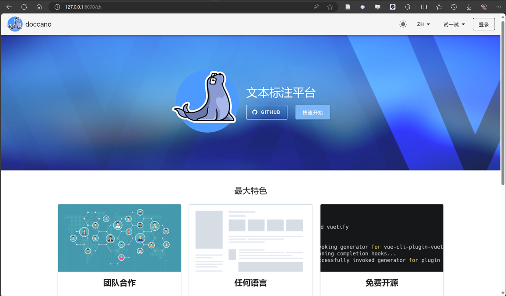
6. 安装好后可以通过以下命令在命令行中初始化数据库，并创建用户：
# 初始化数据库
doccano init
# 创建一个用户：admin和pass改成你特定的账号和密码
doccano createuser --username admin --password pass
7. 创建用户后就可以开启服务，我们先在一个命令行中运行如下命令：
# 启动webserver，port后是端口号
doccano webserver --port 8000
8. 然后打开另一个终端或命令行，输入以下命令启动任务队列：
# 启动任务队列
doccano task
9. 最后在浏览器中访问地址http://127.0.0.1:8000就可以打开Doccano工具进行标注了。Doccano初始界面：
二、使用Doccano
1. 输入创建用户时的用户名和密码后进入界面： 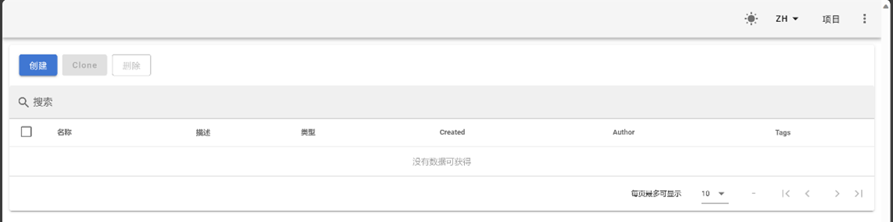 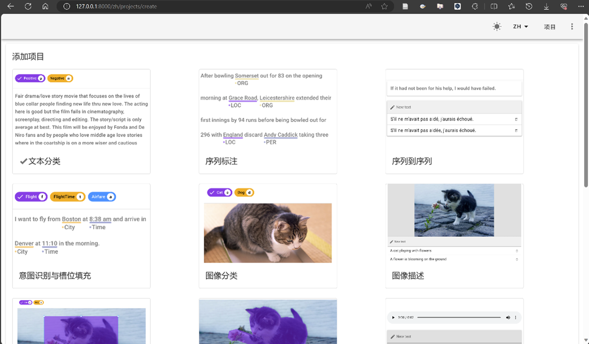 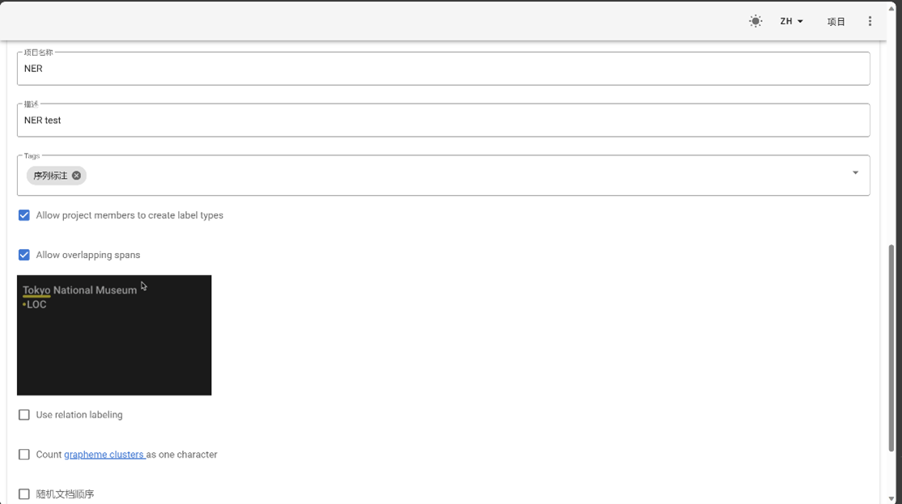 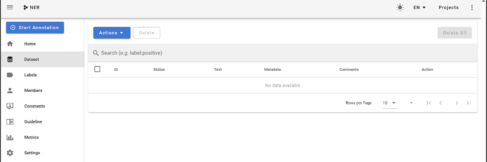 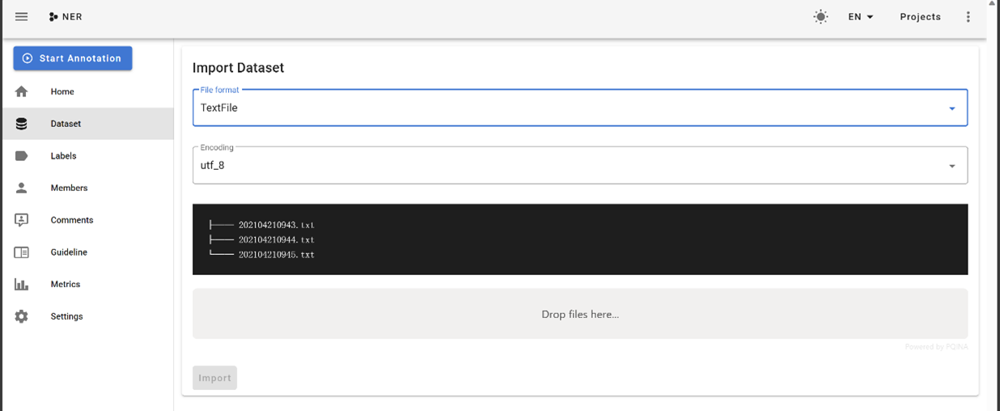 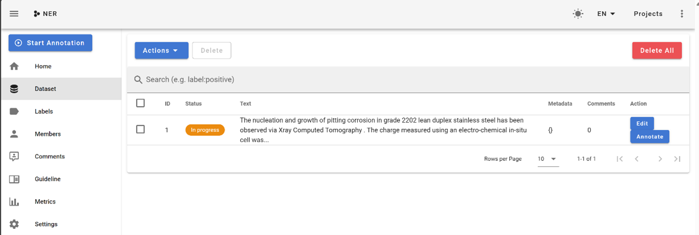 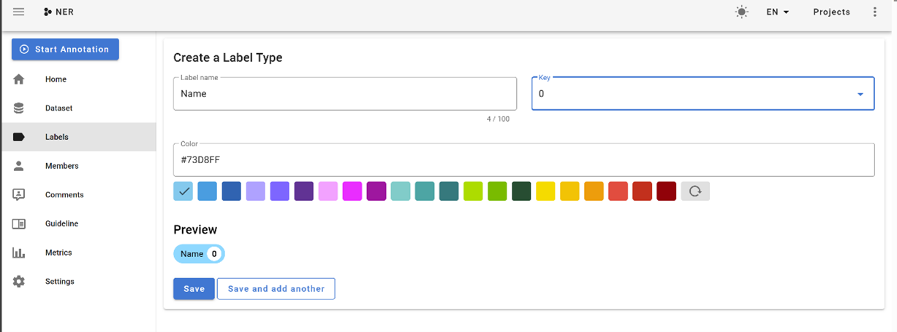 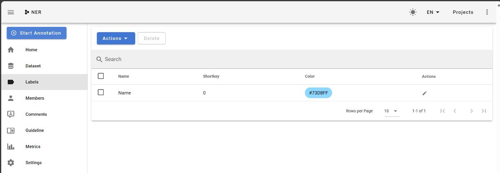 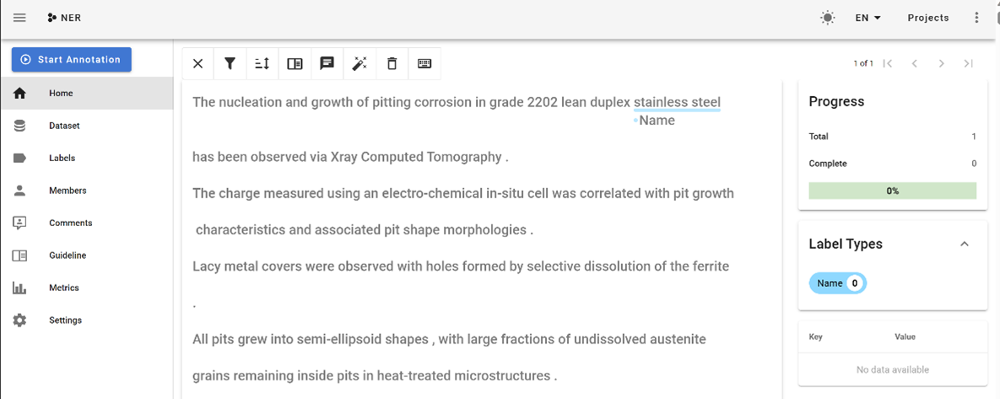 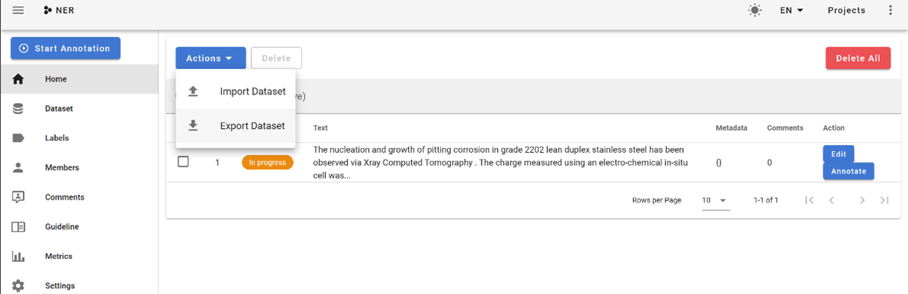 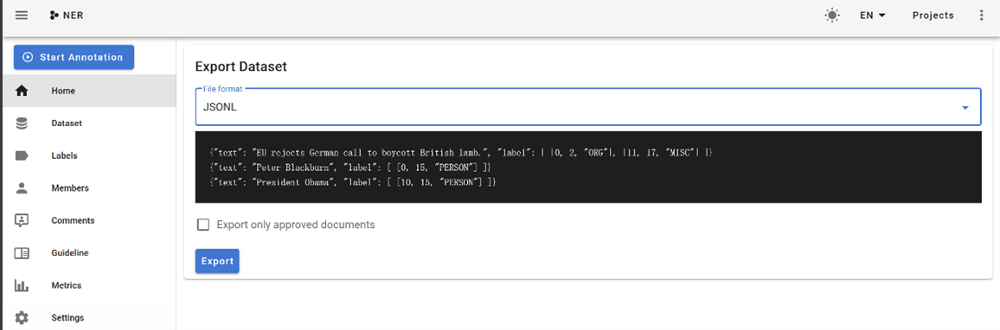